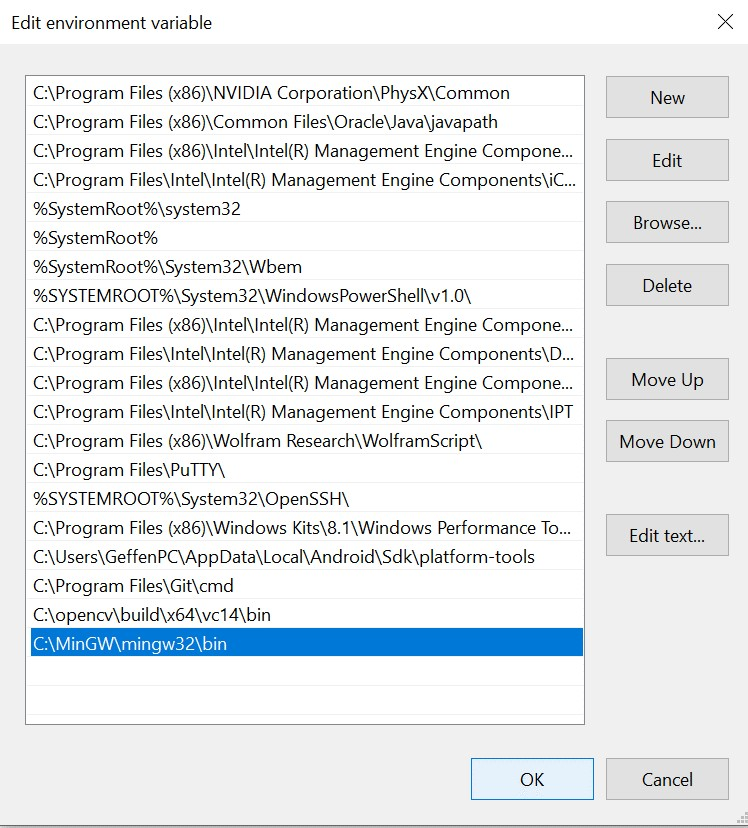
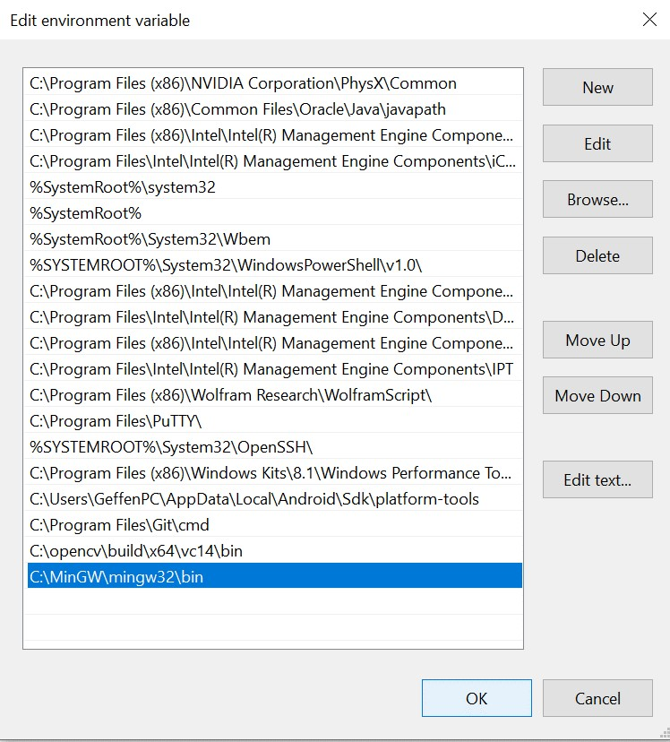
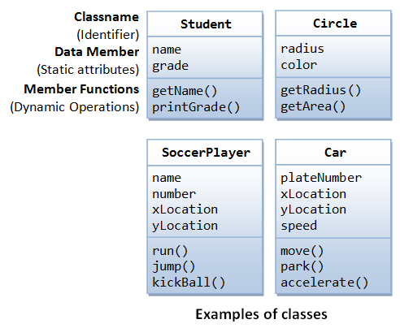
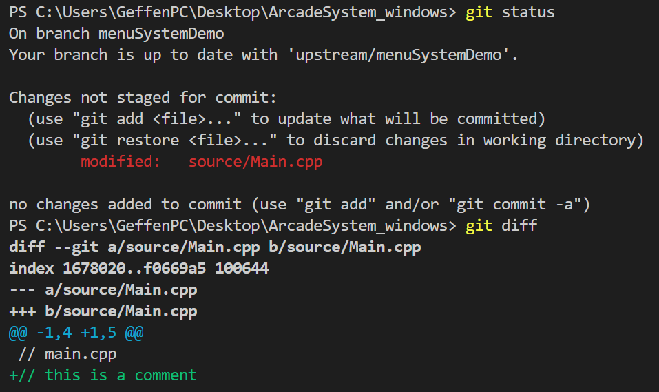
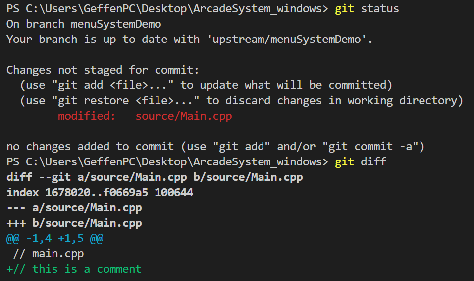

Project Lessons
Introduction: Welcome to the lessons page of the Virtual Arcade System Software Project! This poject is a great opportunity to apply object oriented programming in C++. If you are a beginner, don't worry! These lessons will help guide you through the process of building this project.
Note: This project does not assume any prior programming experience. However, this is not an easy project and may require you to spend time reading through these lessons and other resources I have linked if you have little to no programming experience.
Lesson 0: Environment setup (completion time: 15 min - 45min)
For terms or concepts that may require additional explanation, I have provided clickable links to simple articles that provide more detail.Overview: Before we do anything, we need to set up an environment in which we can program in. This step is very important, so please read and follow every instruction carefully. This setup can be very frustrating if you miss a step or something goes wrong so please be patient and email me with any questions.
1. Downloading a code editor
No matter what language you use, when building a software project you need an environment where you can write code. For this project we will be using Visual Studio Code which is a free code editor with tools and extensions that will help us build our project. Follow this link and download the according version (Windows or Mac).- On Windows, an installation setup wizard should pop up (if not it will appear as something similar to "VSCodeUserSetup-x64-1.38.1.exe" in your downloads folder, double click it). Just hit next through the setup and leave the default settings unless you want to configure the installation in a certain way.
- On Mac it should show up in your downloads as a .zip. Double click on this to extract the archive. Move the Visual Studio Code application into your applications folder and then open up the app.
2. Configuring Visual Studio Code for C++
After installing Visual Studio Code we need to configure it so that we can develop in C++. Open it up if you haven't already and click the extensions icon (under the debug icon) in the left side bar. Search for C++, click the first extension, and install it as shown in this image. This extension helps us write C++ code but does not come with a C++ compiler. A compiler is a program that takes our C++ code and translates it into lower level "object code" which we will use to make an executable program. For a better explanation of a compiler click here. Setting up Visual Studio Code with a C++ compiler will be different based on your OS so follow the steps based on your computer.3. Setting up Visual Studio Code with a C++ compiler
Windows
 Unfortunately Windows does not come with a C++ compiler so we will need to download some extra tools. We will be downloading MinGW which comes with a compiler, debugger, and a make utility, which we need to build this project.
Unfortunately Windows does not come with a C++ compiler so we will need to download some extra tools. We will be downloading MinGW which comes with a compiler, debugger, and a make utility, which we need to build this project.
- Download it at this link. After it downloads double click on the installer which should say something like "mingw-w64-install.exe" (check your downloads folder if it doesn't pop up and double click it like before).
- Click next through the installer setup and when you get to the "Installation folder" section as shown to the right, change the path to C:\MinGW. Continue through the rest of the setup and wait for it to install.
- Next we need to add the MinGW "bin" folder's path to our PATH variable so that we can access the tools from any directory.
What is the PATH variable? Note: "path" vs "path variable". "path" typically refers to a location in a file system like "C:\Users\userOne\Documents\file.txt"
Follow these five steps which each reference the five images below.- search environment in the windows search bar and select "Edit the system environment variables"
- Click the "Environment Variables" button
- Then click the "path" row under "System Variables" and click the "edit" button
- Finally click the "New" button and type "C:\MinGW\mingw32\bin". Then click "ok" on all the open tabs.
- To test if you configured the PATH variable correctly, open the command prompt (search cmd in the windows search bar) and type "g++". You should get something like: "g++: fatal error: no input files compilation terminated."
Setting up MinGW

 


Setting up Visual Studio Code with g++ (still windows)
Now we need to configure Visual Studio Code with the C++ compiler g++ that comes with MinGW by editing a properties file. However, first we must create and open a folder where we want these configuration settings to take effect.- create a new folder on your computer, then in VS Code go to File->Open Folder and open that folder
- Now go to the Command pallete by clicking View -> Command Pallette or CTRL + SHIFT + P.
- In the search bar type C++ and click the "Edit Configurations (UI)" option. A new tab will open called C/C++ Configurations.
- Scroll down to the "Compiler Path" section and type "C:/MinGW/mingw32/bin/g++" in with the quotes.
- Under intelliSense mode choose "gcc-x64".

Testing if C++ works with Visual Studio Code on Windows
Our environment is finally setup for C++ so let's check it to make sure it works.- Go to File -> New File. Save with CTRL + S and it will prompt you to name it, save as test.cpp
- Copy and paste the following code:
#include <iostream> using namespace std; int main() { cout << "If this prints then you have set up C++ correctly!"; return 0; } - Go to Terminal -> New Terminal, press enter, and type the following commands:
This image is what it should look like. If you get an error and can't figure it out please email me or come to my office hour.g++ -o test test.cpp .\test
MAC
Fortunately, setting up C++ to compile on a Mac is much easier than Windows because Mac has an easy way to install "command line developer tools" which will provide us with utilities like clang (C++ compiler) and Make.
Downloading command line developer tools on Mac
- open the search by using Command + Space. Type in "Terminal" and press enter to open it up
- In the terminal install the Command line tools with the command "xcode-select --install" Make sure you only install the tools and NOT xcode.
- Now type clang and make sure you get something like "$ clang: error: no input files"
Configuring Visual Studio Code with g++
- First we need to set up Visual Studio Code to open from the command line. In VS code use CTRL + SHIFT + P to open up the command pallete or go to View -> Command Pallete
- Now type Shell and select "Shell Command: Install 'code' command in PATH." After it installs close VS code.
- Now open up the terminal if you closed it and type "mkdir testFolder" to make a new folder. Enter that folder by typing "cd testFolder". Finally type "Code ." to open up this folder in VS Code.
-
Open the command pallette like before and type C++ and select "Edit Configurations (UI)". A new tab called C/C++ Configurations will open up. In this tab scroll down to "compiler path" and paste "/usr/bin/clang". Also make sure intellisense is "clang-x64" as shown.

- C++ is finally configured! Now let's test to make sure it works.
Testing C++ on MAC
Go to File -> New File. Save with CTRL + S and it will prompt you to name it, save as test.cpp#include <iostream>
using namespace std;
int main()
{
cout << "If this prints then you have set up C++ correctly!";
return 0;
}
g++ -o test test.cpp
./test

4. Managing a new project using Git and linking to the SDL2 library
Now that we have our code editor working with C++ we can start a project. When creating mid to large size programming projects with multiple files, we want to manage our code with a tool called Git and save our code online using a site called Github.- Git is known as a version control system and it is used to manage software in a container called a repository. For example, say you make some changes to working code and break it. Using Git, you can see every change and undo them if necessary. More on this later.
- Github on the other hand is a service to store and manage your Git repositories online.
I have created a repository (basically a directory to store a project) on github with some base code which we will build off of. This base code includes build tasks, the SDL2 library, and a small set of classes I created to help create a simple menu system. What we will be doing is copying the base code into a local directory on your computer and start from there.
- first download git if you don't have it already from this link. In the installation wizard just click next through all the steps and install it.
- next, create an account on github if you don't have one already from this link
- The next thing we need to do is configure git with our information. Type these commands into the command prompt (terminal) with your name and email. git config --global user.name "firstName lastName" git config --global user.email "email@website.com"
-
Now that git is configured let's copy the base code to your local computer from github. Open the command prompt (terminal)
and navigate to a location where you want to save your project. This may be documents, desktop, or anywhere else you
want. Once in the location you want type this command:
- Windows: "git clone https://github.com/geffencooper/ArcadeSystem_windows.git"
- Mac: "git clone https://github.com/geffencooper/ArcadeSystem_mac.git"
- Now type "cd ArcadeSystem_windows" or "cd ArcadeSystem_mac", and then type "dir" if on Windows and "ls" if on Mac. You should see the following folders: GUI_files, SDL_files, source
cd SDL_files
/usr/bin/ruby -e "$(curl -fsSL https://raw.githubusercontent.com/Homebrew/install/master/install)"
brew install SDL2 SDl2_image SDL2_ttf SDl2_mixer
cp -R /usr/local/Cellar/sdl2/2.0.10/include/SDL2/ include/
cp -R /usr/local/Cellar/sdl2/2.0.10/lib/ lib/
cp -R /usr/local/Cellar/sdl2_image/2.0.5/include/SDL2/ include/
cp -R /usr/local/Cellar/sdl2_image/2.0.5/lib/ lib/
cp -R /usr/local/Cellar/sdl2_ttf/2.0.15/include/SDL2/ include/
cp -R /usr/local/Cellar/sdl2_ttf/2.0.15/lib/ lib/
cp -R /usr/local/Cellar/sdl2_mixer/2.0.4/include/SDL2/ include/
cp -R /usr/local/Cellar/sdl2_mixer/2.0.4/lib/ lib/
5. Testing to see if SDL2 works
- Open up Visual Studio code and go to File->Open Folder and open the according folder, "ArcadeSystem_windows" or "ArcadeSystem_mac"
-
Now use "CTRL (CMND on Mac) + SHIFT + B" to bring up a build task drop down. It should look like the following picture

- select "build all". Then type "CTRL (CMND on Mac) + SHIFT + B" and select "run ArcadeSystem"
- you should get a blank window that says ArcadeSystem at the top as shown
- That's it!
Congradulations! You finished the environment setup. This is one of the more difficult and frustrating parts of building software projects so don't get discouraged, the rest of the project is much more fun.
Lesson 1: Introducing the Menu System/Designing a GUI
Before getting into the design, watch this video for a demo of what the Arcade System will look like.
Intro
For this project, the goal is to provide you with something which you can expand on so we will be building a "base" version of the Arcade System with a simple menu system, one game (brick breaker), and some music. At the end, you will have the knowledge and opportunity to customize your Arcade by building your own games and adding your own images and music.

Designing a GUI
What is a GUI A GUI is a "Graphical User Interface" and is the way we interact with a program. We will go through the steps of designing a simple GUI that will be used to interact with our arcade system. However, due to time constraints we will not be programming this GUI from scratch. Instead we will just implement some files that I created to help program the GUI. This image here on the right shows a visual of the GUI we will be making.
High Level Design
 How do we go about desiging a menu system from scratch?
How do we go about desiging a menu system from scratch?
- When building a multi file project, you don't want to start coding right away or you will end up with a bunch of messy code with no organization. The first step is to start with the high level logic and design. Start with a sketch or diagram of what you want your program to look like or how it might work. This image on the right is one of the early diagrams I made and represents a vision of what I wanted the arcade system to look like.
 The next step is to take the specific image or vision and generalize it a bit and break it down into components
so that we can begin thinking in more of a programmatic way which makes the transition from design to implementation more fluid. Essentially,
we want to take our design and consider how we can create some structure from it.
Consider this generalized diagram on the right. What does it resemble? It resembles
a tree-like structure right. Now using this more generic diagram let's think about the structure of a tree. A tree starts with what we call the "root" and expands
out into what we call "Nodes." Nodes are basically discrete points that hold data and are linked together to form the tree. Each box in the diagram is a node.
The next step is to take the specific image or vision and generalize it a bit and break it down into components
so that we can begin thinking in more of a programmatic way which makes the transition from design to implementation more fluid. Essentially,
we want to take our design and consider how we can create some structure from it.
Consider this generalized diagram on the right. What does it resemble? It resembles
a tree-like structure right. Now using this more generic diagram let's think about the structure of a tree. A tree starts with what we call the "root" and expands
out into what we call "Nodes." Nodes are basically discrete points that hold data and are linked together to form the tree. Each box in the diagram is a node.
Being more explicit with our design
The next step is to get more explicit with our tree structure and start to define some rules and attributes. In our tree structure we will define something called the Node->Screen->Button hierarchy which basically are the three tiers of our menu system.- Node: The node represents an organizational unit in our menu system and does not really do anything more. Its role will become more clear but in general we can say that a node is a collection of screens.
- Screen: The screen represents the guts of the node and is where all the action happens. The top level user will be unaware of the nodes and will only interact with the screens. The screen also holds a list of buttons.
- Button: The button is what facilitates movement through the tree and is what actually links screens to screens and nodes to nodes.
- parent-child relationship of nodes: We also need to define the connections between nodes. In this tree we are going to keep things simple and say that every "parent" node can have multiple "child" nodes, but every "child" node can only have one parent. Basically, every node can branch out into multiple nodes, but each node can only link to one node above itself. This way we avoid having loops in our tree.

Transitioning from design to implementation
So now that we have a good idea of how our menu system is designed, let's go into the details of implementation because this design needs to be described in code. So how do we do that? How do we take these attributes and rules that we used to describe our tree structure and make them into code? We use classes and create objectsWe have already categorized our design into distinct parts that we can visualize (Node, Screen, Button) and described them. Now we can take all the attributes and behaviors we associated with these parts and bundle them up into units which we call objects. For a quick intro about classes and objects in C++ click this link For example, if we want to do something in our tree like move screens or play music how do we do that? We use the buttons. We can bundle up a set of attributes and behaviors associated with actions into a button object.
- In addition, we can bundle up the set of attributes and behaviors associated with the structure of our tree into screen and node objects
- So essentially in C++, an object is a unit that bundles up a set of attributes and behaviors. It is also helpful to think about objects in C++ as real life objects, so for example take a look at these classes to the right which are blueprints to define objects.
-
Note how I described objects in two different ways
- We can take a real life object and describe its behaviors and attributes so that we can implement it as a construct in our program
- Or we can take some high level abstract design and split it up into bundles of behaviors and attributes and form objects These are just two ways you can think about objects
Defining the Node, Screen, and Button Classes
I highly reccomend looking through "Button.h", "Screen.h", and "Node.h" in the GUI_files->headers folder inside our project folder. These files define a generic Button, Screen, and Node class. In summary:
- Button Attributes: width, height, x position, y position Button Methods: Accessors, mutators, update, render What are accessors and mutators
- Screen Attributes: list of ArcadeTexture objects Screen Methods: Accessors, mutators, update, render
- Node Attributes: currentScreen object, list of screen objects, parent node object, renderer object Node Methods: Accessors, mutators, update, render
Inheritance
This gives us the flexibility to create different types of buttons or screens or nodes that share the same general attributes but behave in a specific way through inheritance. For a good explanation of inheritance in C++ read this article So what I have done is inherited from the button class to create two different buttons (SimpleButton and OptionsButton) and inherited from the screen class to create two different screens (MenuScreen and GameScreen). You can see these in the GUI_files->headers folder.Understanding the GUI loop
So before we can start using the button, screen, and node objects to build our menu system we first have to understand how a GUI loop works. A GUI loop is just a series of three steps that our program follows:- Handle Input: First we want our GUI to track any user events such as mouse movement or keystrokes. We want our menu system to be able to react to these events accordingly
- Update: Next we need our GUI to update the states or values of certain variables based on te user input. For example, if the user move their mouse over a button we want to update the state of that button to "selected."
- Render: Rendering just means painting to the screen. So for example, our button state was updated to selected so now when we render that button it will be rendered with some opacity to show that it is selcted.
int main(int argc, char* argv[])
{
// initialize resources we need like the window
if (!init())
{
printf("Failed to initialize!\n");
}
// if initializes successfully then continue
else
{
// we want to run the gui loop until the user quits
bool quit = false;
// here we create the first node for our menu system
RootNode currentNode(arcadeSystemRenderer, nullptr);
// ---------------THE GUI LOOP
while (!quit)
{
// handle all user events until there are none left
SDL_Event e;
while (SDL_PollEvent(&e) != 0)
{
// update the current node
currentNode.update(&e);
// user requests quit by clicking window X
if (e.type == SDL_QUIT)
{
quit = true;
}
}
currentNode.update(nullptr);
// render the current node
currentNode.render(arcadeSystemRenderer);
SDL_RenderPresent(arcadeSystemRenderer);
}
}
The GUI works like this
- Before going into the loop, create the first node in the menu system. We hold it in a variable called currentNode because we only care about updating and rendering the current node. There is no point in updating and rendering the other nodes if we aren't using them.
- Now we enter the loop and run it until the user wants to quit
- Next we check for user events and pass them to the current node until there are no events left. When we update the currentNode it will call update for the currentSceen (again we only care about the current screen) which will check if a button is selected or not.
- If there are no events we still want to update the current node but just pass in no event
- Finally we render the node to the screen. Node will render the current screen, which will render all its ArcadeTexture objects and all its buttons.
conclusion
That was a lot of information so don't worry if a lot of it didn't make sense. Next class we will be going over how to actually use these objects to create a menu system. One important concept to remember is abstraction, it is not critical to understand how button, screen, and node work under the hood but rather it is important to know how to use them because at the end of the day we just want to build the menu system. For example, its good to understand how a car generally works but you don't need to understand all the details of how it works under the hood in order to use it. In this case I have implemented the GUI classes for you and abstracted all the details away by providing a set of methods (we will learn these next class) for you to use to build a menu.
Lesson 2: Using Git and implementing the menu system
Exploring the project directory
Before we start coding let's take a look at our project directory which we copied from github in lesson 0.
 This image on the right shows what our project directory (also our git repository) looks like.
This image on the right shows what our project directory (also our git repository) looks like.
-
.git: This folder signfies that "ArcadeSystem_windows" is a git repository so any changes made will be identified by git. We won't open or change this folder directly.
-
.vscode: This folder stores configuration settings. It has files that specify things like the compiler path, include paths, build tasks, debugger settings.
The "build arcadeSystem" task we call to compile our code is defined here.
We won't open or change this folder.
-
GUI_files: This folder has all the classes and files necessary to build the menu system. The Node, Screen, and Button classes can be found in "GUI_files->headers"
if you are curious.
We will be using these files and possibly opening them but we will not change them.
-
SDL_files: This folder has files we need from the SDL2 library. These files are basically just a bunch of functions we can use to do things like detect keystrokes or put images on the screen.
We will not change or open this folder.
-
source: This folder is where all our resources (images and fonts) and source code (the C++ files we will make) for our project are located.
This is really the only folder you need to interact with. You can think of all the other folders as tools we need to help us build our project and
this source folder is where all the action happens and where the tools are used.
Using Git
Next we need to learn a little bit about git. If you remember from lesson 0 and read the articles, git is a version control system (basically a tool that helps us manage our code). We will be using it to track our code and also to publish it to a remote repository on your github account. You can think of github as a powerful version of google drive that is specifically for software.
Seeing git in action
To understand what git does, it is useful to see it in action. These three images below show a succession of events.
1. Start with some code
2. Change or add to the code


3. Seeing the changes identified by git (left side is visual git interfce, right side is git command line interface)
 
What we are seeing in the images in part three is git recognizing Main.cpp has been changed. You can interact with git through a visual interface or
a command line interface. In the command line interface we use the commands git status to check the current state of our repository and git diff to see what we changed.

What we are seeing in the images in part three is git recognizing Main.cpp has been changed. You can interact with git through a visual interface or
a command line interface. In the command line interface we use the commands git status to check the current state of our repository and git diff to see what we changed.
Now that we have an idea of what git does, let's learn how it works and how to use it. Currently our files are part of a git repository. A repository is just a storage space where a project sits in. What makes it a git repository is that we have the .git folder which tracks all our changes and builds a history of our project that we can easily access and interact with.
Files in our project directory can be in different states: untracked, modified, staged, and committed.
- Untracked: files that are in our directory but are not tracked by the git repository. Note: just because a file is in a directory with a .git folder does not mean it is tracked. For example, I created a new file called test.cpp in the project directory. When I run the command git status it tells me the file is untracked. To start tracking it I use git add file
-
Modified: files that are being tracked by the git repository and have changed since the last time we "commited" (saved our changes) or since tracking them by adding them to the git repo.
What we see in this image are two things.- We start tracking test.cpp by adding it to the git repo with git add. This is seen by git status showing "new file". On the left we have it in "staged changes" which shows any changes that we "added" to the git repo. .
- We modify test.cpp by typing a comment. When we view "Changes" in the left we see the before and after at the top. git status shows the first change (adding test.cpp to the directory) is "added" and ready to be "committed" (saved) but the second change (modifying test.cpp with a comment) has not been "added" and is not ready to be committed (saved). Changes that we want to keep must be "added" with git add. A change that is "added" is ready to be commited (saved) but is not saved yet.
- Staged: changes that we make in our directory that we want to eventually "commit" or save. We use the git add file command. When we uses git status, these "staged" or "added" files that we changed will be green not red meaning that they are ready to be saved.
- Committed: changes that are safely saved and stored in our git repository. This is shown in the image. Every time we commit we must put a message with it. A commit is like a checkpoint in our project and signifies a series of changes.

 The whole process is summed up by this diagram which shows the different states of files. So for "test.cpp" we started as
untracked when we first added it to the directory. Then it became tracked, unmodified, and staged when
we used git add. Then it went to modified when we put a comment in the file. At this point the original empty file was staged but the
comment was not staged so if we committed the file then only the blank file would be saved. Finally, we added the change and committed it which
puts it back at the unmodified state.
The whole process is summed up by this diagram which shows the different states of files. So for "test.cpp" we started as
untracked when we first added it to the directory. Then it became tracked, unmodified, and staged when
we used git add. Then it went to modified when we put a comment in the file. At this point the original empty file was staged but the
comment was not staged so if we committed the file then only the blank file would be saved. Finally, we added the change and committed it which
puts it back at the unmodified state.
This may seem confusing as there are nuances between what each of these states really means. Basically all you need to worry about is git add and git commit. The visual git interface is very useful if you don't have experience with git or want and easy way to see what is going on without needing to use the other git commands. This interface let's you see all the changes you made to each file.
setting up a remote repository
Everything we have talked about up until now regarding git has been "locally". By this I mean we have only been using git to track and save changes on your local computer, not online or another computer (With exception to lesson 0 when did use git to clone the repo from online). What we will be talking about now is how to link your local git repository to a repository online using GitHub.In git, remote repositories are versions of our project that are hosted somewhere else, in this case on GitHub. Because we cloned our repo from my GitHub, we automatically have this as one of our remote repos. By default this remote repo is called "origin". We will add another remote repo from your Github so you can not only save your changes online but also copy changes from my repo if necessary.
- First, we need make a new repository on github. Login to your github account online and click the + symbol in the top right and then "new repository." Name your repository whatever you want like yourNameArcade and click "create repository." In the next window select HTTPS and copy the url. Look at the three images above as a reference.
- Next, we want to change the name of our current remote repo from "origin" to "upstream" so that we know it is the original source.
In visual studio code, open the terminal and type:git remote rename origin upstream -
Now we need to add a remote repo called origin and link it to the repo we just created in github. In the same terminal session
type this command
git add remote origin URL to your repoexample URL: https://github.com/geffencooper/geffenArcade.git -
Finally, we want to "push" or send our current git repository with all our files to this remote repo. In the same terminal window type:
git push origin master. To check that it worked, go to your github and refresh the page, it should have our project in there. -
the image below shows the steps. When I type
git remote -vit prints out the urls of each remote repo. You can do this as a check to make sure the upstream is my repo and origin is your repo.


That's it for git we can now start coding. This setup can be confusing if it is your first time so please do not hesitate to email me with questions at any time. Please also come to my office hour if you need help.
implementing the menu system
Before we do anything, I added a new build task to make things easier. To get this new build task, go to the terminal in visual studio code as we have done before and typegit pull upstream master
I am going to go through a basic example of how to use the methods and classes I provided. For the full code for the menu system I made a repo on GitHub and have the link at the bottom of this lesson. The repo has a ReadMe with information on how to use and set up the code.

Step 1: Creating a new node
The first step to implementing the menu system is creating a new node. If you recall our menu system is a tree of nodes. To do this create a new file called "RootNode.h" in the source directory of the project. Do this by right-clicking source and then clicking new file as sown in the image.This is the code for a basic rootNode that flips between two screens when you click a button.
Copy-paste this into your RootNode.h. Also, below this is code you need for "Main.cpp". I will dissect the code in detail below.
// RootNode // include the files we need #include "Node.h" #include "Config.h" #include "MenuScreen.h" #include "SimpleButton.h" class RootNode : public Node // publicly inherits from Node { public: // Constructor // initializer list RootNode(SDL_Renderer* renderer_in, Node* parentNode_in): Node(renderer_in, parentNode_in) { // first create screens for the node MenuScreen* screen1 = createMenuScreen(); MenuScreen* screen2 = createMenuScreen(); // create images and text to put on the screen using an ArcadeTexture object ArcadeTexture* screen1Background = createImage(renderer_in, "rootNodeImages/rootNodeScreenBackground.png", true); ArcadeTexture* screen2Background = createImage(renderer_in, "rootNodeImages/rootNodeScreenBackground.png", true); ArcadeTexture* screen1Text = createSimpleText(renderer_in, "fonts/retro/italic.ttf", 100, "screen 1", 255, 255, 0); screen1Text->setPosition(windowWidth / 2 - screen1Text->getW() / 2, 25); ArcadeTexture* screen2Text = createSimpleText(renderer_in, "fonts/retro/italic.ttf", 100, "screen 2", 255, 255, 0); screen2Text->setPosition(windowWidth / 2 - screen2Text->getW() / 2, 25); // add the images and text to the screen after creating them screen1->addTextureToScreen(screen1Background); screen1->addTextureToScreen(screen1Text); screen2->addTextureToScreen(screen2Background); screen2->addTextureToScreen(screen2Text); // make a text button to put on the screen1 SimpleButton* button1 = createSimpleTextButton(renderer_in, "fonts/pixel/classic.ttf", 30, "gotoscreen2", 255, 0, 0); button1->setButtonPosition(windowWidth / 2 - button1->getWidth() / 2, screen1Text->getY() + screen1Text->getH() + 50); // give this button an action button1->setButtonAction(createAction(MOVE_SCREENS, screen2)); // make a text button to put on the screen2 SimpleButton* button2 = createSimpleTextButton(renderer_in, "fonts/pixel/classic.ttf", 30, "gotoscreen1", 255, 0, 0); button2->setButtonPosition(windowWidth / 2 - button2->getWidth() / 2, screen2Text->getY() + screen2Text->getH() + 50); // give this button an action button2->setButtonAction(createAction(MOVE_SCREENS, screen1)); // add the buttons to their screens screen1->addButtonToScreen(button1); screen2->addButtonToScreen(button2); // add the screens to the node this->addScreen(screen1); this->addScreen(screen2); // tell the node the current screen this->setCurrentScreen(screen1); } };
Code for Main.cpp. Copy-paste this into your Main.cpp.
Then type CTRL (CMDN on Mac) + SHIFT + B and run these tasks: "build arcadeSystem" then "run arcadeSystem". Note: There might be some red squiggly lines saying your code has errors, try running the tasks anyways because VS code can be a bit delayed and not recognize some references. If you change the code and want to recompile it run the tasks "recompile arcadeSystem" then "run arcadeSystem".IMPORTANT: Once you copy these files to your project and get them working, we need to add, commit, and push them with git so that you can have a working version saved. This way when you make changes and additions you will be able to see and go back to the working version when it breaks. See the picture at the bottom for how to do this.
// main.cpp #include "SDL.h" #include "SDL_mixer.h" #include "SDL_ttf.h" #include "SDL_image.h" #include "Config.h" #include <stdio.h> #include "RootNode.h" // declaring pointer to objects that main needs, initialize to null // these objects are created in main because they are needed for the outermost loop SDL_Window* arcadeSystemWindow = nullptr; SDL_Renderer* arcadeSystemRenderer = nullptr; TTF_Font* font = nullptr; // initialization function, initializes above objects and calls some SDL initialization functions bool init() { // Initialization flag bool success = true; // Initialize SDL if (SDL_Init(SDL_INIT_VIDEO | SDL_INIT_AUDIO) < 0) { printf("SDL could not initialize! SDL Error: %s\n", SDL_GetError()); success = false; } else { // Create window in the center of the screen arcadeSystemWindow = SDL_CreateWindow("Arcade System", SDL_WINDOWPOS_UNDEFINED, SDL_WINDOWPOS_UNDEFINED, windowWidth, windowHeight, SDL_WINDOW_SHOWN); if (arcadeSystemWindow == NULL) { printf("Window could not be created! SDL Error: %s\n", SDL_GetError()); success = false; } else { // initialize renderer, set the background as white for the wwindow, sync the renderer with the monitor refresh rate arcadeSystemRenderer = SDL_CreateRenderer(arcadeSystemWindow, -1, SDL_RENDERER_ACCELERATED | SDL_RENDERER_PRESENTVSYNC); SDL_SetRenderDrawColor(arcadeSystemRenderer, 0xFF, 0xFF, 0xFF, 0xFF); } // Initialize SDL_mixer if (Mix_OpenAudio(44100, MIX_DEFAULT_FORMAT, 2, 2048) < 0) { printf("SDL_mixer could not initialize! SDL_mixer Error: %s\n", Mix_GetError()); success = false; } // initialize true type font if (TTF_Init() == -1) { printf("SDL_ttf could not initialize! SDL_ttf Error: %s\n", TTF_GetError()); success = false; } } return success; } int main(int argc, char* argv[]) { // first call initialization if (!init()) { printf("Failed to initialize!\n"); } // if initializes successfully then continue else { bool quit = false; RootNode currentNode(arcadeSystemRenderer, nullptr); while (!quit) { // handle events on queue until empty SDL_Event e; while (SDL_PollEvent(&e) != 0) { currentNode.update(&e); // user requests quit by clicking window X if (e.type == SDL_QUIT) { quit = true; } } currentNode.update(nullptr); currentNode.render(arcadeSystemRenderer); SDL_RenderPresent(arcadeSystemRenderer); } } return 0; }
When running you should see this screen and be able to flip to the next screen using the button.


How to add, commit, and push using git
Type theses commands when you get your code working.git add . then git commit -m"working version" then git push origin master You should see these additions in your GitHub account.
Dissecting the code
Main.cpp
All C++ programs start their execution from the method "main()" so let's start from the file Main.cpp where the function "main" sits.This is the first chunk of code we see in the file Main.cpp
// main.cpp #include "SDL.h" #include "SDL_mixer.h" #include "SDL_ttf.h" #include "SDL_image.h" #include "Config.h" #include <stdio.h> #include "RootNode.h"
This next chunk of code is an initialization function that we don't have to worry about
This code just calls some functions that SDL provides us to create a window, a renderer, and make sure that our resources are working.// declaring pointer to objects that main needs, initialize to null // these objects are created in main because they are needed for the outermost loop SDL_Window* arcadeSystemWindow = nullptr; SDL_Renderer* arcadeSystemRenderer = nullptr; TTF_Font* font = nullptr; // initialization function, initializes above objects and calls some SDL initialization functions bool init() { // Initialization flag bool success = true; // Initialize SDL if (SDL_Init(SDL_INIT_VIDEO | SDL_INIT_AUDIO) < 0) { printf("SDL could not initialize! SDL Error: %s\n", SDL_GetError()); success = false; } else { // Create window in the center of the screen arcadeSystemWindow = SDL_CreateWindow("Arcade System", SDL_WINDOWPOS_UNDEFINED, SDL_WINDOWPOS_UNDEFINED, windowWidth, windowHeight, SDL_WINDOW_SHOWN); if (arcadeSystemWindow == NULL) { printf("Window could not be created! SDL Error: %s\n", SDL_GetError()); success = false; } else { // initialize renderer, set the background as white for the wwindow, sync the renderer with the monitor refresh rate arcadeSystemRenderer = SDL_CreateRenderer(arcadeSystemWindow, -1, SDL_RENDERER_ACCELERATED | SDL_RENDERER_PRESENTVSYNC); SDL_SetRenderDrawColor(arcadeSystemRenderer, 0xFF, 0xFF, 0xFF, 0xFF); } // Initialize SDL_mixer if (Mix_OpenAudio(44100, MIX_DEFAULT_FORMAT, 2, 2048) < 0) { printf("SDL_mixer could not initialize! SDL_mixer Error: %s\n", Mix_GetError()); success = false; } // initialize true type font if (TTF_Init() == -1) { printf("SDL_ttf could not initialize! SDL_ttf Error: %s\n", TTF_GetError()); success = false; } } return success; }
This final chunk of code is what we care about and is where all the action happens
int main(int argc, char* argv[]) { // first call initialization if (!init()) { printf("Failed to initialize!\n"); } // if initializes successfully then continue else { bool quit = false; RootNode currentNode(arcadeSystemRenderer, nullptr); while (!quit) { // handle events on queue until empty SDL_Event e; while (SDL_PollEvent(&e) != 0) { currentNode.update(&e); // user requests quit by clicking window X if (e.type == SDL_QUIT) { quit = true; } } currentNode.update(nullptr); currentNode.render(arcadeSystemRenderer); SDL_RenderPresent(arcadeSystemRenderer); } } return 0; }
First we call the initialization function which returns true or false. The "!" is the negation operator and gives us the opposite of the value to the right of it. So here if the function init() returns false the value becomes true and we enter the if statement.
// first call initialization if (!init()) { printf("Failed to initialize!\n"); }
If the function returns true then the value becomes false and we skip over the if statement and enter this else statement. This is our GUI loop. This chunk of code is the essence of our program. Before entering the loop we do two things, 1. create a variable to store the state of our program (is it running or did we quit) and 2. We create the first node called currentNode.
else { bool quit = false; RootNode currentNode(arcadeSystemRenderer, nullptr); while (!quit) { // handle events on queue until empty SDL_Event e; while (SDL_PollEvent(&e) != 0) { currentNode.update(&e); // user requests quit by clicking window X if (e.type == SDL_QUIT) { quit = true; } } currentNode.update(nullptr); currentNode.render(arcadeSystemRenderer); SDL_RenderPresent(arcadeSystemRenderer); } }
- Create an event object to store the latest event that happens
- While events (mouse clicks, keystrokes) are still happening handle those events. We handle an event by passing it to the current node in this case it is the RootNode and telling it to update by calling its update function with the latest event. This update function will update the current screen which will check to see if a button is hovered on or clicked on. Next we want to check if the lastest event was to quit (this happens by closing the window).
- Once all events are processed we exit the inner while loop. We then call update for the current node again so that if no events happen, it will still update (this will be more useful later when we have games).
- Finally, we render the currentNode which will render the current screen which will render all the images, texts, and buttons it has. RenderPresent is the final step and is what actually prints to the screen.
RootNode.h
This file is where our menu system is implemented.This first chunk has the same purpose as in Main.cpp, we need these files to build the components of our menu
// RootNode // include the files we need #include "Node.h" #include "Config.h" #include "MenuScreen.h" #include "SimpleButton.h"
This next chunk is how we begin defining a new Node
class RootNode : public Node // publicly inherits from Node { public: // Constructor // initializer list RootNode(SDL_Renderer* renderer_in, Node* parentNode_in): Node(renderer_in, parentNode_in) {
RootNode currentNode(arcadeSystemRenderer, nullptr);, this constructor was called which
will initialize the node. Don't worry about the "initializer list", it is just saying we want to set this node's renderer and parent node to the values passed in.
Everything inside the curly braces of the constructor will be executed as follows
// first create screens for the node MenuScreen* screen1 = createMenuScreen(); MenuScreen* screen2 = createMenuScreen();
createMenuScreen() function. This function returns what is called a "pointer" to
the menuScreens. A pointer is just a variable we can use to access these objects. If you want to know more about pointers read this.
If you are curious as to why we are using pointers to the objects instead of the objects themselves first read this. After
reading about pointers and stack vs heap you should some insight into how our C++ program is stored in memory. The reason I have pointers to objects is because
I am creating these objects on the heap so I can only access them through pointers. The details of why I have these objects on the heap is beyond the scope of this project but
if you are curious you can ask me through email or my office hour.
This is a lot of information so don't worry if it is confusing. You mainly need to worry about how to use the methods, not so much why.
creating images and text to put on the screen
// create images and text to put on the screen using an ArcadeTexture object ArcadeTexture* screen1Background = createImage(renderer_in, "rootNodeImages/rootNodeScreenBackground.png", true); ArcadeTexture* screen2Background = createImage(renderer_in, "rootNodeImages/rootNodeScreenBackground.png", true); ArcadeTexture* screen1Text = createSimpleText(renderer_in, "fonts/retro/italic.ttf", 100, "screen 1", 255, 255, 0); screen1Text->setPosition(windowWidth / 2 - screen1Text->getW() / 2, 25); ArcadeTexture* screen2Text = createSimpleText(renderer_in, "fonts/retro/italic.ttf", 100, "screen 2", 255, 255, 0); screen2Text->setPosition(windowWidth / 2 - screen2Text->getW() / 2, 25);
createSimpleText(renderer, file path to image, true or false if want image to fill the screen)
createImage(renderer, file path to font, font size,text to display, font color R value, G value, B value)
We also need to set the x,y position of the text, the images automatically have their position set because they fill the screen.
Now we need to add these images and text to the according screen
// add the images and text to the screen after creating them screen1->addTextureToScreen(screen1Background); screen1->addTextureToScreen(screen1Text); screen2->addTextureToScreen(screen2Background); screen2->addTextureToScreen(screen2Text);
Next we will create buttons. Buttons are just images or text that have an action associated with them
// make a text button to put on the screen1 SimpleButton* button1 = createSimpleTextButton(renderer_in, "fonts/pixel/classic.ttf", 30, "gotoscreen2", 255, 0, 0); button1->setButtonPosition(windowWidth / 2 - button1->getWidth() / 2, screen1Text->getY() + screen1Text->getH() + 50); // make a text button to put on the screen1 SimpleButton* button2 = createSimpleTextButton(renderer_in, "fonts/pixel/classic.ttf", 30, "gotoscreen1", 255, 0, 0); button2->setButtonPosition(windowWidth / 2 - button2->getWidth() / 2, screen2Text->getY() + screen2Text->getH() + 50);
Now we will add actions to the buttons.
// give this button an action button1->setButtonAction(createAction(MOVE_SCREENS, screen2)); // give this button an action button2->setButtonAction(createAction(MOVE_SCREENS, screen1));
A little explanation about button actions: an action is composed of two things the action type and action parameter. The action type is exactly what is sounds like, it is the action you want to do such as MOVE_SCREENS. I have already predefined a set of actions for us. You can see them under GUI_files->Action.h. The action parameter is what we actually use to complete the action. So for the case of MOVE_SCREENS, the action parameter is the screen (pointer to the screen object). Don't worry about the details, just know that this is how you create and set a button action.
The final step is to add the buttons to the screens and add the screens to the node
// add the buttons to their screens screen1->addButtonToScreen(button1); screen2->addButtonToScreen(button2); // add the screens to the node this->addScreen(screen1); this->addScreen(screen2); // tell the node the current screen this->setCurrentScreen(screen1); } };
That's how we create nodes. This was a basic node. To see the full menu which is more complex click here
Once you get this code working, try changing and messing with it. See what happens. It's really difficult to understand how something works just by reading it, the best way to learn is to try it yourself. Gradually, things will start to make more sense and you will be able to customize your menu system however you want which is the most fun part!
Lesson 3 Starter Code
For lesson 3 you need your Main.cpp to look like this:
// main.cpp #include "SDL.h" #include "SDL_mixer.h" #include "SDL_ttf.h" #include "SDL_image.h" #include "Config.h" #include <stdio.h> #include "GameNode.h" // declaring pointer to objects that main needs, initialize to null // these objects are created in main because they are needed for the outermost loop SDL_Window* arcadeSystemWindow = nullptr; SDL_Renderer* arcadeSystemRenderer = nullptr; TTF_Font* font = nullptr; // initialization function, initializes above objects and calls some SDL initialization functions bool init() { // Initialization flag bool success = true; // Initialize SDL if (SDL_Init(SDL_INIT_VIDEO | SDL_INIT_AUDIO) < 0) { printf("SDL could not initialize! SDL Error: %s\n", SDL_GetError()); success = false; } else { // Create window in the center of the screen arcadeSystemWindow = SDL_CreateWindow("Arcade System", SDL_WINDOWPOS_UNDEFINED, SDL_WINDOWPOS_UNDEFINED, windowWidth, windowHeight, SDL_WINDOW_SHOWN); if (arcadeSystemWindow == NULL) { printf("Window could not be created! SDL Error: %s\n", SDL_GetError()); success = false; } else { // initialize renderer, set the background as white for the wwindow, sync the renderer with the monitor refresh rate arcadeSystemRenderer = SDL_CreateRenderer(arcadeSystemWindow, -1, SDL_RENDERER_ACCELERATED | SDL_RENDERER_PRESENTVSYNC); SDL_SetRenderDrawColor(arcadeSystemRenderer, 0xFF, 0xFF, 0xFF, 0xFF); } // Initialize SDL_mixer if (Mix_OpenAudio(44100, MIX_DEFAULT_FORMAT, 2, 2048) < 0) { printf("SDL_mixer could not initialize! SDL_mixer Error: %s\n", Mix_GetError()); success = false; } // initialize true type font if (TTF_Init() == -1) { printf("SDL_ttf could not initialize! SDL_ttf Error: %s\n", TTF_GetError()); success = false; } } return success; } int main(int argc, char* argv[]) { // first call initialization if (!init()) { printf("Failed to initialize!\n"); } // if initializes successfully then continue else { bool quit = false; GameNode currentNode(arcadeSystemRenderer, nullptr); while (!quit) { // handle events on queue until empty SDL_Event e; while (SDL_PollEvent(&e) != 0) { currentNode.update(&e); // user requests quit by clicking window X if (e.type == SDL_QUIT) { quit = true; } } currentNode.update(nullptr); currentNode.render(arcadeSystemRenderer); SDL_RenderPresent(arcadeSystemRenderer); } } return 0; }
- © Untitled
- Design: HTML5 UP